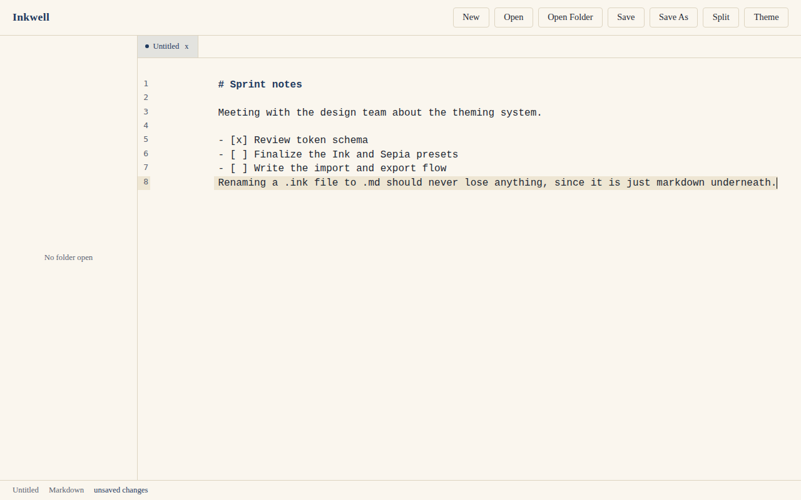
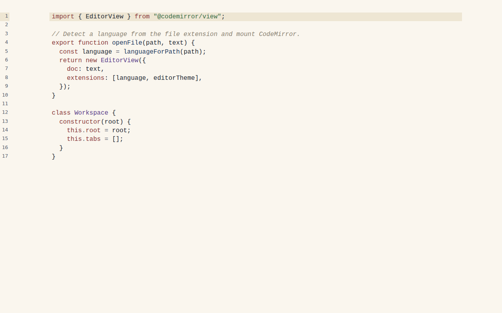

Write and code together
Notes and code files live in the same workspace, in the same sidebar, in the same session. Keep a note next to the snippet it explains.
Make it yours
A real theming system, not just light and dark. Colors, fonts, and the syntax highlighting palette are all editable, and themes import and export as plain JSON files you can share.
Nothing leaves your machine
No account, no cloud sync, no telemetry. Notes are saved as local files you own, with a
.ink extension that is unmodified markdown underneath.
See it working


A theme for how you work
Ten themes ship with Inkwell. Every color and font shown here is editable, and you can export what you build to share it.
Get Inkwell
Windows builds are published on every tagged release. macOS and Linux builds are on the way.